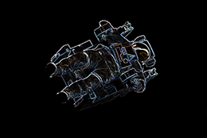
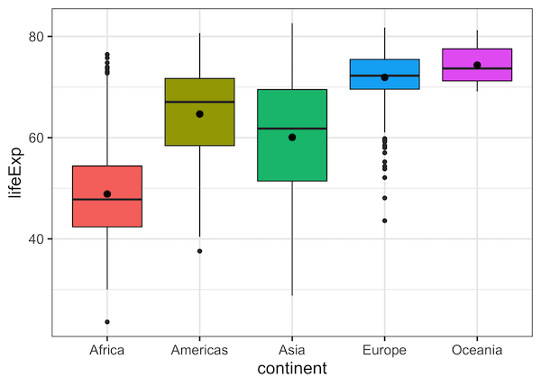

R Stats Bootcamp 03
Data structures
R Stats Bootcamp 02

R Functions
Imagine your computer's memory is like space and you are alone floating in it. Anything you you can see floating with you is a Data Object in R-Space.
R Stats Bootcamp 02
(In R-Space, no one can hear you scream.)
Objectives
Basic data types in R
Data with factors
class()and converting variablesVector and Matrix fun
Practice exercises
Basic data types in R
Concept of “Data Objects”
Data you can use is in the Global Environment
Data Type refers to the kind of data (important for computers)
Data Type is determined automatically in R (by the passive-aggressive Butler)
You often will need and want to tweak data type
Basic data types in R
# numeric vector
variable_1 <- c(4,5,7,6,5,4,5,6,7,10,3,4,5,6)
# logical vector
variable_2 <- c(TRUE, TRUE, TRUE, FALSE)
Basic data types in R
There are some rules for naming data objects
Can contain letters, numbers, some symbolic characters
Begin with a letter, Does not contain spaces
Some things are forbidden,
@,%,#, etc.Should be human-readable, consistent, and not too long
Basic data types in R
x1 <- 5
x2 <- "It was a dark and stormy night"
# hard to read
my_variable_9283467 <- 1
Data with factors
Let’s you want to analyse categorical data.
Sometimes this is called a “factor”.

Data with factors
Two types of factors
Non-ordered factors : the levels are the names of the categories cows = Martha, Ruth, Edith
Ordered factors: have a specific order dose = Control < Half < Full
class() and converting variables
# non-ordered factor
variety <- c("short", "short", "short",
"early", "early", "early",
"hybrid", "hybrid", "hybrid")
Vector and Matrix fun
Ways of organizing data
Vector - One dimension from 1 to i,
my_vec[i]Matrix - Two dimensions rows, columns,
my_mat[i, j]Array - Three (or more) dimensions,
my_array[i, j, k]
Vector and Matrix fun
# Vectors
myvec1 <- c(1,2,3,4,5)
myvec1
class(myvec1)
myvec2 <- as.character(myvec1)
Vector and Matrix fun
vec1 <- 1:16
vec1
mat1 <- matrix(data = vec1,
ncol = 4,
byrow = FALSE) Practice Exercises